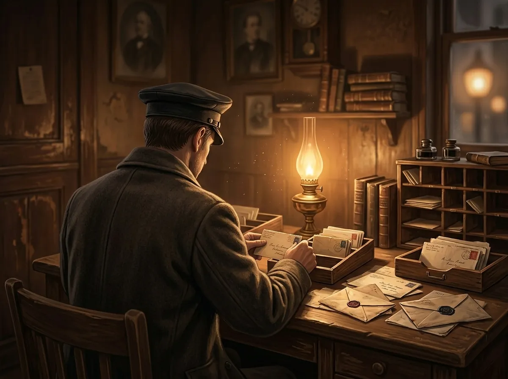
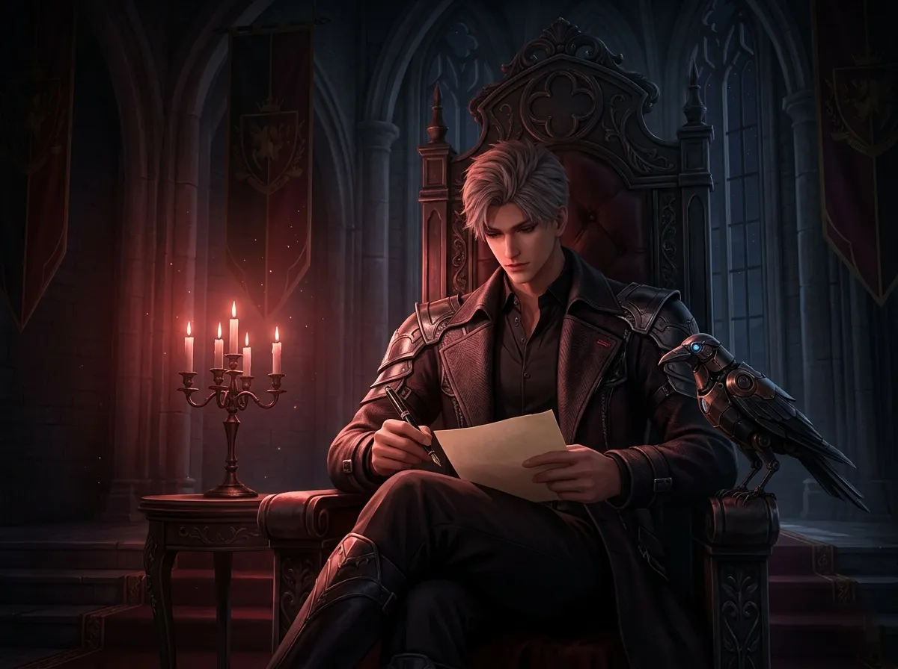
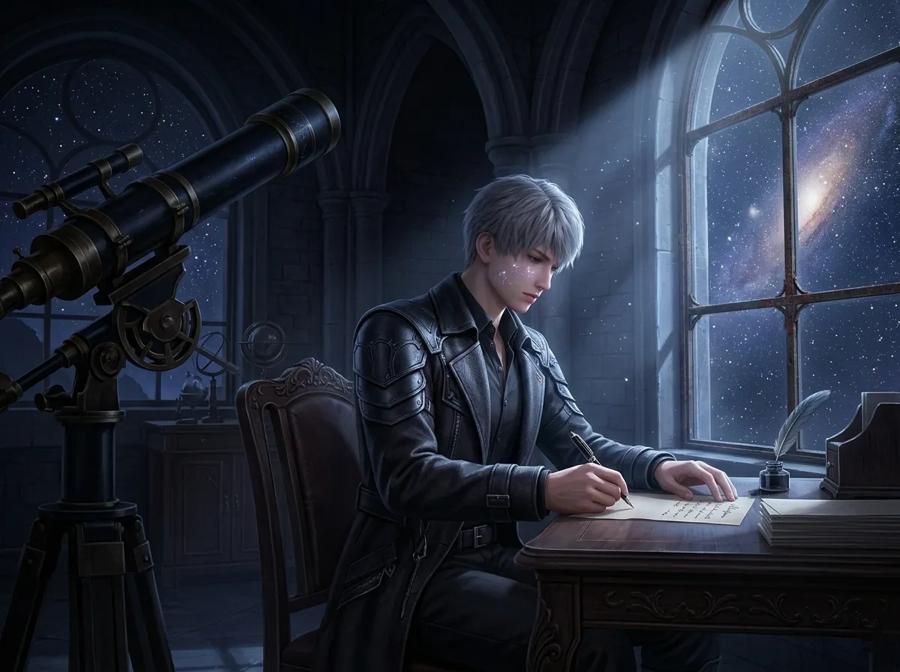
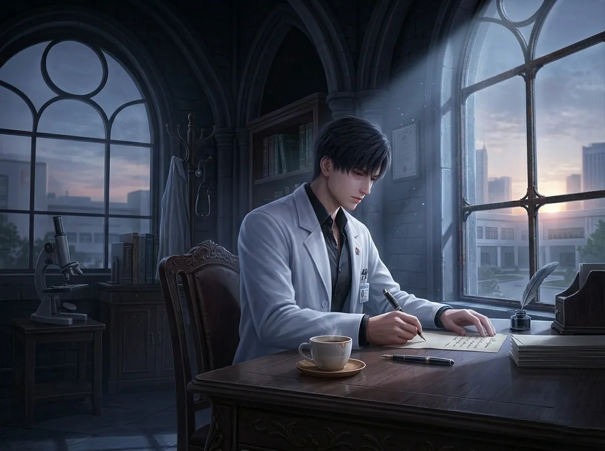
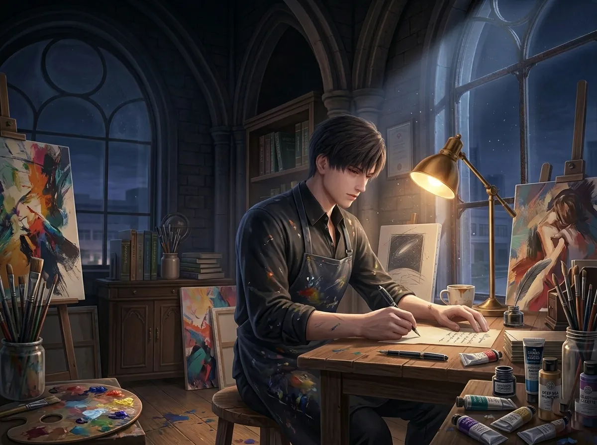
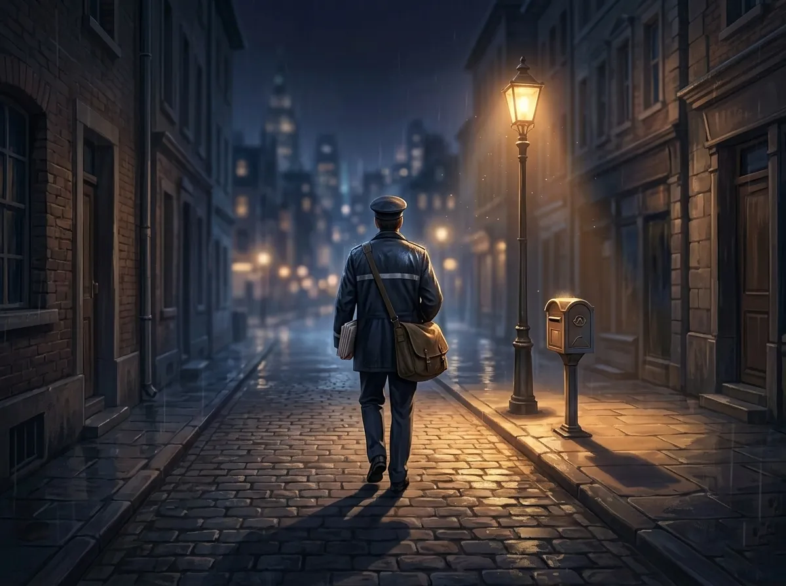
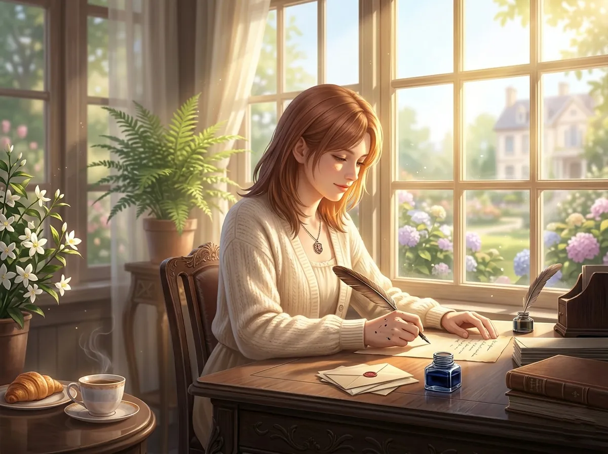
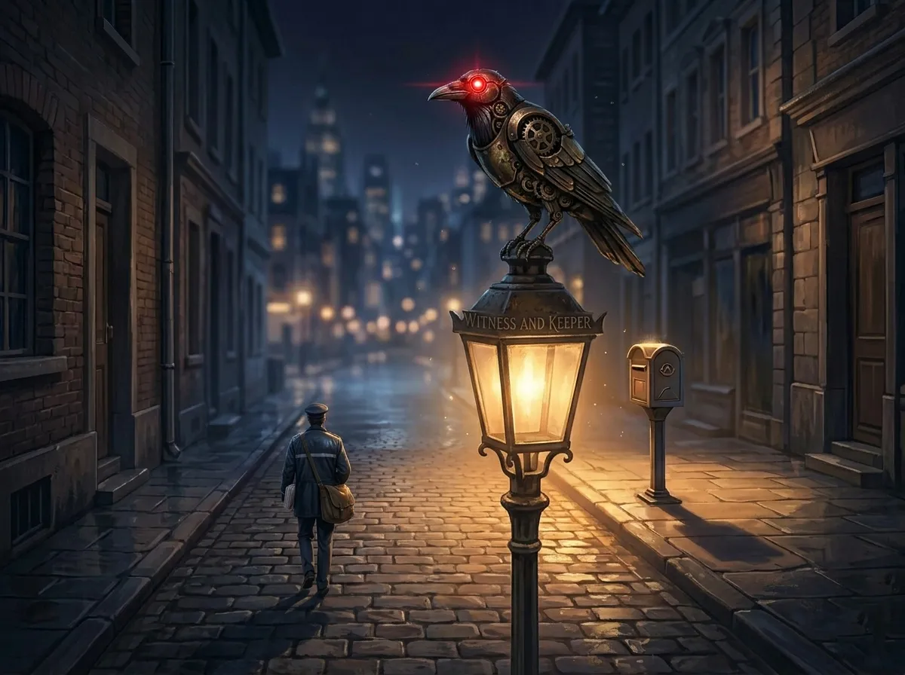

Letters Never Sent — Volume Two
This time, they are writing to each other.

He found them in a locked drawer. Not his drawer. Someone else's. The key was under the mat. (People never hide keys well.)
Four envelopes. No stamps. No addresses. No names on the front.
But inside — inside were names. Names he recognized. Names of men who never spoke to each other. Who sat in the same room and pretended the others weren't there.
He read them.
He shouldn't have.
But some things are meant to be found.
These are those letters.

Xavier,
You don't know me. Not really. You see the coat. The throne. The reputation I didn't ask for. You see what I let them see.
But I see you.
Two hundred years is a long time to wait. I've waited too — not for her, for something else — but I know the shape of patience. Yours is different. Yours is quiet. Mine is loud. Both are exhausting.
She doesn't know, does she? That you count the days. That you remember every conversation. That you fell asleep in the rain once, waiting, and didn't tell anyone.
I know because I was there. You didn't see me. I don't let people see me.
But I saw you.
You're not as alone as you think. The stars don't answer, but other things do. Other people.
Not me. I'm not good at that.
But maybe him. Or him. Or her.
Just — don't wait alone. It's worse that way.
— S
P.S. The vitamins were from me. Tell her. Or don't. Your choice.

Zayne,
You think no one notices. I notice.
I notice you stay late when you don't have to. I notice you drink coffee that has gone cold because you forgot to drink it when it was hot. I notice you say "I'm fine" and mean "I'm tired but I won't say it."
I used to do the same thing.
Two hundred years ago, someone told me to rest. I didn't listen. I kept waiting. Kept watching. Kept forgetting to eat.
It didn't help. She didn't come faster because I was tired. She came when she came. I just made myself smaller in between.
You're not smaller. You're just quieter.
She sees you. I see you. Even he sees you — he just won't admit it.
You don't have to save everyone. You're allowed to be saved too.
— X
P.S. The astronomy books in your office. I noticed. They're good choices.

Rafayel,
I don't understand your art. I've tried. I stood in front of your paintings for hours. She told me to look at the brushstrokes. She told me to feel the colors.
I don't feel colors. I see wavelengths.
But I felt something.
In the painting you turned to the wall — the one you never show anyone. I saw it. You left the door open.
It's her. But it's not just her. It's the way you see her. Like she's made of light. Like you're afraid she'll disappear if you blink.
I know that feeling.
I'm a doctor. I'm trained to stay calm. To not let emotions interfere. But when she walks into my office, my heart rate changes. Every time.
I've never told anyone that.
You paint it. I hide it. Different languages. Same sentence.
Keep painting. Even the ones you hide. They matter.
— Z
P.S. The fish are calming. You were right. I bought a tank for my office.

Sylus,
I don't like you. You're loud and quiet at the same time. You take up space without moving. You make me feel like I'm performing when I'm not.
But I drew you once.
You were sitting on your throne. Alone. The lights were off except for one. You weren't being the king. You were just being a man who looked tired.
I didn't finish the drawing. I couldn't get your eyes right.
They were sad. I didn't expect sad.
She talks about you differently than the others. With you, her voice goes softer. Like she's afraid of breaking something.
I don't know what you did to deserve that. But I know what it's like to be seen as fragile.
You're not fragile. Neither am I. But sometimes being seen is enough.
Keep the vitamins. She needs them. So do you.
— R
P.S. The painting in your throne room. The seascape. I know it was you. Thank you for not telling anyone.

The postman folded the letters. Put them back in the drawer. Locked it. Put the key back under the mat.
He walked home in the dark. The city was quiet. The stars were out.
He thought about the letters. About the men who wrote them. About the words they said to each other's faces that they never said out loud.
He wondered if they would ever know.
Probably not.
But he knew. And that was enough.
Someone had to witness it.

I don't know how to start this. I've written it a hundred times. Deleted it. Rewritten it. Lost it.
So I'll just say it.
To Sylus — you are not as cold as you pretend. I see the cracks. I stay anyway.
To Xavier — you can stop waiting now. I'm here. I'm not going anywhere.
To Zayne — you deserve rest too. Not just the rest you give everyone else.
To Rafayel — I see you. The real you. The one behind the paint.
I don't know how to love all of you. I don't know if I'm supposed to choose. I don't know if anyone is keeping score.
But I know that when I'm with each of you, I am more myself.
And that counts for something.
I think.
I hope.
— Me

The postman never delivered the letters. That wasn't his job. He just found them. Read them. Put them back.
But the next day, something changed.
Sylus bought two bottles of vitamins. One for her. One for Xavier.
Xavier stayed awake during the day. He sat in the sun. He said it was warmer than the stars.
Zayne bought a fish tank. He put it in his office. The fish were calming. He told Rafayel. Rafayel smiled.
Rafayel finished the drawing. The one of Sylus on the throne. He left it on the doorstep. No note. No name. Sylus hung it in the hallway. Not the throne room. The hallway. Where everyone could see it.
They didn't know why they did these things. They just did.
But the postman knew.
He saw the letters. He saw the changes. He saw the small kindnesses that bloomed from words never spoken.
He never told anyone.
Some secrets are better kept.
But some secrets — some secrets become the world.